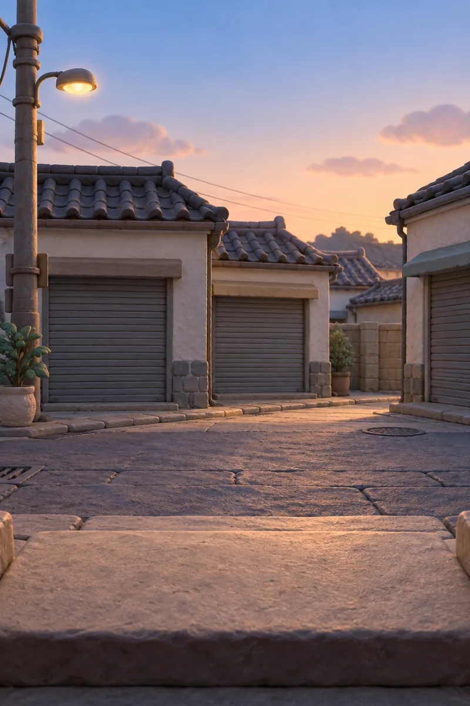
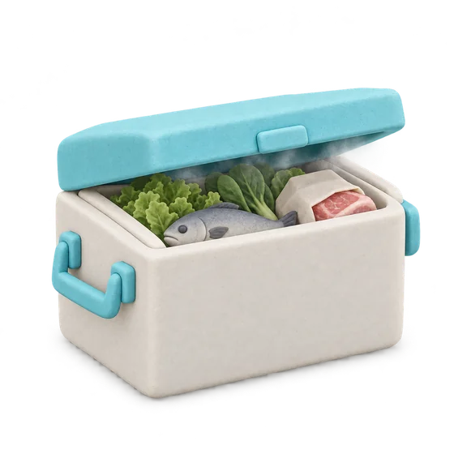
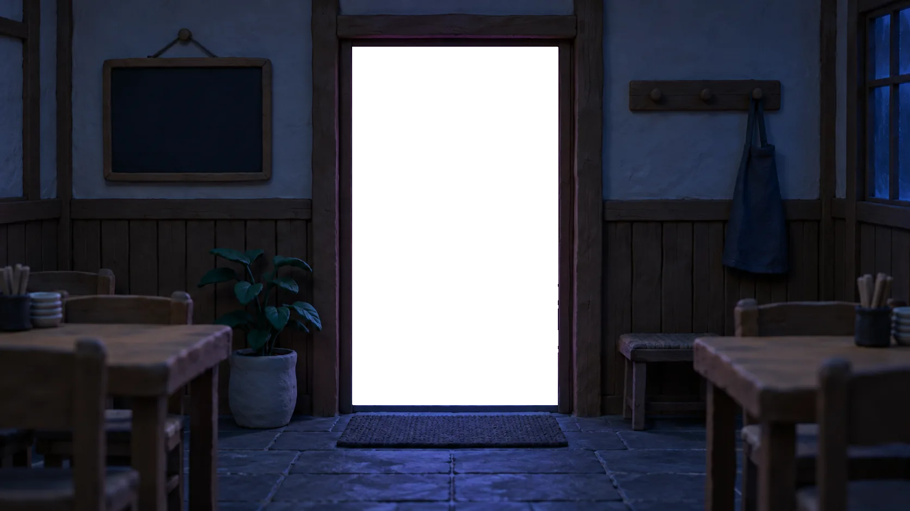

사장님은
아침에 문만 여세요.
동네가 자는 동안 CHADA 냉장차가 식자재를 문 앞까지,
2.8℃ 그대로 가져다 둬요.
사장님의 아침,
왜 이렇게 바쁠까요?
거래처는 다섯 곳, 배송 시간은 제각각.
오픈 준비보다 연락 확인이 먼저인 아침이에요.
- 채소상회
사장님, 오늘 배송은 11시쯤 될 것 같아요.
11시면 점심 준비가 안 되는데요…
- 동네 정육점
이번 주부터 최소 주문량 맞춰 주셔야 출고돼요.
필요한 건 반 상자인데요ㅠ
- 새벽 수산
문 앞에 두고 갑니다.
고기 상자가 한 시간째 밖에 있었네요… 내일은 그냥 새벽 시장 갈게요.
바쁜 아침을 만들던 일, CHADA가 대신해요.
거래처 연락, 들쭉날쭉한 배송, 문 앞에 놓인 상자. 이제 아침엔 확인만 하세요.
-
앱 한 화면에서 거래처 다섯 곳의 주문을 한 번에 끝내는 장면
한 번에 주문
거래처 여러 곳을 앱 한 화면에서 주문해요.
마감은 전날 밤 11시. -
새벽 입고
가까운 가게끼리 한 번에 묶어 돌아요. 동네가 깨기 전에, 모든 가게 냉장고가 채워져요.
-
입고 완료 알림: 망원 김밥집 냉장고에 넣어 뒀어요. 입고 온도 2.8℃.
냉장고 안까지
문 앞에 두고 가지 않아요. 냉장고 안에 넣고, 사진으로 바로 알려드려요.
동네가 자는 동안,
냉장고가 채워져요.
냉장차 한 대가 새벽 3시 30분에 출발해, 해 뜨기 전 여덟 곳을 돌아요.
동네 식당 8곳, 입고 완료
끝까지 2.8℃, 기록으로 보여드릴게요.
냉장차에 싣는 순간부터 냉장고에 넣는 순간까지, 사장님 폰으로 그대로 보여드려요.
망원 김밥집 상자의 입고 기록. 적재부터 입고까지 2.8에서 3.0도 사이로 유지됨
적재부터 입고까지 온도를 놓치지 않아요.
2~4℃ 밖으로 나간 상자는 다시 보내드려요.
이미 이 동네 식당 120곳의
아침이 바뀌었어요.
먼저 시작한 사장님들이 직접 들려준 이야기예요.
"아침 주문 전화가 없어진 게 제일 커요. 그 시간에 육수를 하나 더 끓입니다."
망원동 칼국숫집 사장님도입 8개월
"여름에 고기 상자 걱정을 안 하게 됐어요. 온도 기록이 폰으로 오니까 마음이 편해요."
성수동 국밥집 사장님도입 1년
"출근하면 냉장고가 이미 차 있어요. 처음엔 신기했는데 이젠 당연해졌어요."
연남동 백반집 사장님도입 5개월
"반 상자만 필요한 날도 그냥 주문해요. 최소 주문량 맞추려고 고민할 일이 없어요."
합정동 이자카야 사장님도입 4개월
"거래처 다섯 곳 연락을 앱 하나로 끝내요. 밤 11시 전에 한 번만 보면 돼요."
망원동 분식집 사장님도입 7개월
"새벽 시장에 안 가니까 아침에 잠을 한 시간 더 자요. 이게 제일 좋아요."
성수동 쌀국숫집 사장님도입 10개월
"입고 사진이 오니까 직원한테 따로 확인할 필요가 없어졌어요."
서교동 브런치 식당 사장님도입 3개월
"생선은 신선도가 생명인데, 문 앞에 방치될 일이 없으니 맛이 달라졌다는 말을 들어요."
망원동 횟집 사장님도입 6개월
시작은 2주 시범 배송부터.
지금 쓰시는 거래처를 그대로 연결해요. 맞지 않으면 시범 배송에서 멈추셔도 돼요.
011일
상담
가게 위치와 지금 거래처를 알려 주세요.
023~5일
거래처 연결
쓰시던 거래처를 CHADA 주문 화면에 연결해요.
033일
동선 설계
가게 위치에 맞춰 새벽 동선과 입고 방식을 정해요.
- 가장 중요한 2주
042주
2주 시범 배송
실제 새벽 입고를 2주 동안 먼저 경험해 보세요.
05계속
정식 시작
시범 기간 기록을 같이 보고 이어갈지 정해요.
자주 묻는 질문
새벽에 가게 문은 어떻게 열고 들어오나요?
스마트락 출입 권한을 입고 시간대에만 위임받아요. 출입 기록은 사장님 폰에 그대로 남아요.
지금 쓰는 거래처를 바꿔야 하나요?
아니요. 쓰시던 거래처를 그대로 연결하는 게 기본이에요. 원하시면 동네에서 많이 쓰는 거래처를 추천해 드려요.
주문 마감 시간을 놓치면요?
마감은 전날 밤 11시예요. 놓친 품목은 다음 날 새벽 배송으로 넘어가고, 알림으로 먼저 알려 드려요.
상자에 문제가 있으면 어떻게 하나요?
입고 사진과 온도 기록이 함께 남아서, 앱에서 바로 확인하고 접수할 수 있어요.
우리 동네도 되나요?
새 권역의 첫 파트너 식당을 모집하고 있어요. 상담 때 가게 위치를 알려 주시면 동선을 먼저 확인해 드려요.
내일 아침,
문만 열어 보세요.
남겨 주시면 영업일 기준 하루 안에 담당자가 연락드릴게요. 오늘 밤 주문하면, 내일 아침 그 문 앞에 있을 거예요.